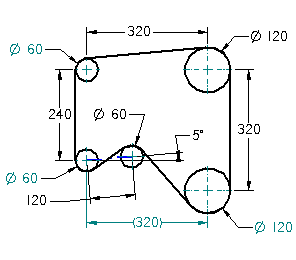

This tutorial demonstrates a typical workflow for using engineering calculation tools to evaluate a 2D design of a pulley and drive belt system.
You will learn how to calculate the perimeter of a drive belt and how to change variables using the Goal Seek command to satisfy the design requirements for a pulley and drive belt system.
This tutorial is an intermediate tutorial, so you may want to work through a beginning tutorial first.
Estimated time to complete: 15 minutes
